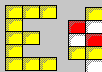

VOLVE 5.0
VOLVE 5.0
Screen Shot 1
Shown here is the main Evolve 5.0 simulation window. We are zoomed out to view the entire "universe". The yellow stuff in the middle are organisms. Lets zoom in more...
Screen Shot 2
After zooming in, we can see the universe better. We can see individual colored squares. Yellow squares are living organisms. Red squares are cells that have just died. White squares are non-living organic material (which can be eaten for energy). Blue squares are spores. Spores are how these organisms reproduce. It is a two step process. First a spore is created then another spore is placed on the same position. This allows both sexual (spores donated from two different organisms) and asexual reproduction (both spores donated from same organism).
Screen Shot 3
Also notice the organism in the middle. The user has selected this organism (as indicated by the tiny black squares surrounding the organism). Selecting an organism allows you to view the organism (see its internal genetics, and other useful statistics). Selecting an organism is also useful if you wish to CUT/COPY/PASTE an organism into another simulation window.
Screen Shot 4
Now we have zoomed in a lot. Each square is very large. This shows the FILE menu. See the overview section for more screen shots and dialogs.
Screen Shot 5
This is an organism which is running the Towers of Hanoi program.
